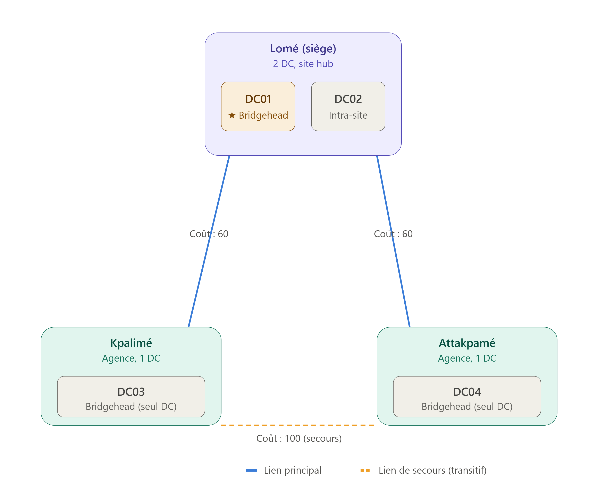

Active Directory Sites and Services : construire la topologie physique de la réplication
Comment adapter Active Directory à la réalité physique de votre réseau, maîtriser la bande passante WAN et optimiser l'authentification des utilisateurs distants.

Jusqu'ici, cette série a traité Active Directory presque exclusivement du point de vue logique : les groupes, les permissions, les rôles FSMO, le schéma. Mais AD ne vit pas dans un monde purement logique — il vit sur un réseau réel, avec des liens WAN de capacités inégales, des sites géographiquement distants, et une bande passante qui n'est jamais infinie. Active Directory Sites and Services est la console qui permet de dire à Active Directory : voici la forme réelle de mon réseau, et voici comment tu dois t'y adapter.
Sans cette couche, Active Directory ferait une hypothèse extrêmement coûteuse par défaut : que tous les contrôleurs de domaine sont sur le même réseau local, bien connectés entre eux. Dans une entreprise avec un seul site, cette hypothèse est vraie et sans conséquence. Dans une entreprise avec un siège et plusieurs agences reliées par des liens WAN plus lents et plus chers, cette hypothèse par défaut génère un trafic de réplication chaotique et inutilement coûteux — c'est précisément ce que ce composant existe pour corriger.
Sommaire
- 1. Pourquoi la réplication a besoin d'une carte du réseau
- 2. Les sites : représenter les zones bien connectées du réseau
- 3. Les sous-réseaux (subnets) : le lien entre une IP et un site
- 4. Le KCC : qui construit réellement la topologie de réplication
- 5. Les Site Links : autoriser et planifier la réplication
- 6. Les serveurs Bridgehead : l'interface unique vers l'extérieur
- 7. « Bridge all site links » : la transitivité par défaut
- 8. Vérifier et forcer la réplication
- 9. Liens avec les articles précédents
1. Pourquoi la réplication a besoin d'une carte du réseau
On a établi dans l'article sur les rôles FSMO qu'Active Directory réplique en mode multi-maître : n'importe quel DC peut accepter une écriture, puis la propager aux autres. Mais cette affirmation laisse une question ouverte, à laquelle Sites and Services répond directement : propager comment, vers qui, en premier, et à quel rythme ?
Sans configuration explicite, tous les DC nouvellement promus dans une forêt atterrissent dans un site unique créé automatiquement à la création de la forêt : Default-First-Site-Name. Tant qu'aucun autre site n'est défini, ce site contient l'intégralité des contrôleurs de domaine, où qu'ils se trouvent physiquement — y compris s'ils sont répartis sur trois continents reliés par des liens WAN de quelques Mbps. Dans cette configuration par défaut, Active Directory considère que tous ces DC sont "bien connectés" entre eux, et applique donc la même stratégie de réplication agressive que s'ils étaient tous sur le même switch — ce qui, sur un lien WAN lent, peut saturer la bande passante disponible en continu.
C'est exactement le scénario de démarrage illustré dans le lab utilisé pour cet article : quatre contrôleurs de domaine — deux à Lomé (siège), un à Kpalimé, un à Attapkamé — tous initialement regroupés dans le même site par défaut, malgré une réalité réseau faite de trois liaisons WAN distinctes. La première étape de toute configuration sérieuse de Sites and Services consiste donc à faire correspondre la topologie logique d'AD à la topologie physique réelle du réseau.
2. Les sites : représenter les zones bien connectées du réseau
Un site Active Directory représente un ensemble de sous-réseaux considérés comme bien connectés — typiquement une localisation physique reliée en interne par un réseau local rapide et fiable (LAN), par opposition aux liaisons WAN plus lentes qui séparent les sites entre eux.
Dans le scénario de ce lab, la structure cible est directe :
Forêt : mylab.local
│
├── Site : Lome-HO (siège, 2 DC : DC01, DC02)
├── Site : Kpalime-BO (agence, 1 DC : DC03)
└── Site : Attakpame-BO (agence, 1 DC : DC04)Créer un site ne fait, à ce stade, que déclarer son existence dans l'annuaire — il faut ensuite lui associer des sous-réseaux et y déplacer les contrôleurs de domaine physiquement présents à cet endroit. Ce déplacement d'un DC d'un site vers un autre ne modifie rien à son fonctionnement local ; il modifie uniquement la façon dont le KCC va planifier sa réplication avec le reste de la forêt.
3. Les sous-réseaux (subnets) : le lien entre une IP et un site
Un site, à lui seul, ne veut rien dire pour le reste d'Active Directory tant qu'aucune plage IP ne lui est associée. C'est le rôle du sous-réseau (subnet) : déclarer qu'une plage d'adresses IP donnée appartient à tel site.
172.18.72.0/24 → Lome-HO
192.168.72.0/24 → Kpalime-BO
10.72.0.0/24 → Attakpame-BODeux règles structurent ce mécanisme :
- Un sous-réseau ne peut être rattaché qu'à un seul site : L'appartenance est exclusive — pas de partage possible entre deux sites pour une même plage IP.
- Un site peut, à l'inverse, contenir plusieurs sous-réseaux : Rien n'empêche un même site physique de couvrir plusieurs plages IP distinctes (VLAN de postes, VLAN de serveurs, etc.), tant qu'elles sont réellement bien connectées entre elles.
Ce rattachement IP → site détermine aussi, côté client, à quel contrôleur de domaine un poste ou un serveur va préférentiellement s'adresser pour s'authentifier. Un poste dont l'adresse IP appartient au sous-réseau 192.168.72.0/24 sera automatiquement dirigé vers le DC de Kpalime plutôt que vers un DC de Lome à l'autre bout d'un lien WAN — c'est la site awareness, un mécanisme qui économise silencieusement du trafic WAN sur l'authentification quotidienne.
4. Le KCC : qui construit réellement la topologie de réplication
Un point souvent mal compris : on ne dessine jamais soi-même la topologie de réplication complète. On configure des sites, des sous-réseaux et des site links — puis un processus automatique appelé le KCC (Knowledge Consistency Checker), qui tourne sur chaque DC, calcule lui-même les connexions de réplication concrètes.
Le KCC ne travaille pas de la même façon selon qu'on est à l'intérieur d'un site ou entre deux sites différents :
a) Réplication intra-site : rapide, non planifiée
À l'intérieur d'un même site, le KCC construit une topologie en anneau. La réplication se déclenche par notification de changement plutôt que sur un horaire fixe : dès qu'un DC accepte une écriture, il informe ses partenaires de réplication après un court délai (quelques secondes), qui viennent alors récupérer la modification.
b) Réplication inter-site : planifiée, compressée, économe
Entre deux sites différents, la bande passante peut être limitée. Le KCC (via le rôle ISTG — Intersite Topology Generator) ne réplique pas à chaque changement individuel. Il respecte à la place un planning défini sur le site link et compresse le trafic de réplication.
5. Les Site Links : autoriser et planifier la réplication
Un site link représente une liaison logique entre deux (ou plusieurs) sites, sur laquelle la réplication inter-site est autorisée à circuler. Sans site link entre deux sites, aucune réplication directe ne peut avoir lieu entre eux.
À la création d'une forêt, un site link unique existe par défaut : DEFAULTIPSITELINK, qui relie automatiquement tous les sites tant qu'aucune structure plus fine n'a été définie.
a) Le coût (cost) : établir une priorité entre plusieurs chemins
Chaque site link porte un coût numérique (100 par défaut). Lorsque plusieurs chemins existent entre deux sites, le KCC privilégie systématiquement le chemin dont la somme des coûts est la plus basse.
Lome-HO ──── Kpalime-BO (lien principal, coût = 60)
Lome-HO ──── Attakpame-BO (lien principal, coût = 60)
Kpalime-BO ───── Attakpame-BO (lien de secours, coût = 100)En abaissant délibérément le coût des deux liens directs depuis le siège (60, contre 100 par défaut), on indique au KCC d'utiliser en priorité les deux liens directs depuis Lome, et de ne garder le lien Kpalime-Attakpame que pour assurer la continuité en cas de panne.
b) L'intervalle et le planning de réplication
Par défaut, la réplication inter-site s'exécute toutes les 180 minutes (réglable de 15 minutes au minimum à une plage horaire précise).
Dans notre scénario, les deux liens WAN prioritaires (Lome-Kpalime et Lome-Attakpame) sont configurés pour interdire toute réplication du lundi au vendredi, de 7h à 18h (heures ouvrées), et pour répliquer toutes les 50 minutes en dehors de cette plage. Le lien de secours n'est pas retouché.
6. Les serveurs Bridgehead : l'interface unique vers l'extérieur
Quand un site contient plusieurs contrôleurs de domaine, Active Directory désigne un bridgehead server : le seul DC autorisé à porter le trafic de réplication inter-site pour ce site. Cela évite de multiplier inutilement le trafic WAN.
Il est possible de désigner manuellement un preferred bridgehead server, comme dans notre lab où DC01 est configuré comme bridgehead préféré pour le transport IP.
DC01 (Lome, bridgehead) ── réplique avec ──► DC03 (Kpalime)
DC01 (Lome, bridgehead) ── réplique avec ──► DC04 (Attakpame)
DC01 (Lome) ── réplique avec ──► DC02 (Lome, intra-site)
Le second DC de Lome (DC02) ne réplique jamais directement avec Kpalime ou Attakpame : il reçoit ces changements par réplication intra-site depuis DC01.
7. « Bridge all site links » : la transitivité par défaut
L'option "Bridge all site links" est activée par défaut sur le transport IP. Quand elle est active, le KCC considère que tous les site links sont transitivement reliés entre eux.
Créer manuellement un objet site link bridge n'a aucun effet tant que cette option reste cochée. Ce n'est que dans les réseaux à topologie en étoile stricte (où deux agences ne doivent jamais répliquer entre elles) qu'il devient pertinent de la décocher et de configurer manuellement les ponts autorisés.
8. Vérifier et forcer la réplication
Voici les méthodes pour vérifier et accélérer le recalcul de la topologie :
- Dans la console : Clic droit sur l'objet
NTDS Settingsd'un DC > All Tasks > Check Replication Topology. - En ligne de commande :
repadmin /kcc: déclenche le recalcul à distance.repadmin /replsummary: affiche la synthèse de réplication de la forêt.repadmin /showrepl: détaille les partenaires de réplication et les dernières synchronisations pour un DC précis.
9. Liens avec les articles précédents
Cette notion de topologie physique s'articule directement avec nos précédents sujets :
- Avec Les rôles FSMO : Les FSMO gèrent les règles logiques d'autorité, tandis que Sites and Services définit le chemin physique et la fréquence de propagation de ces modifications.
- Avec Où vivent les identités : Les objets Site, Subnet et Site Link sont stockés dans la partition Configuration de la forêt, répliquée sur l'ensemble des DC.
- Avec Aging and Scavenging DNS : La gestion du temps et le refus du trafic inutile partagent le même objectif : préserver la bande passante et la cohérence de l'annuaire.
Conclusion
Active Directory Sites and Services configure la façon dont l'annuaire respecte la réalité physique du réseau sur lequel il tourne. Une topologie logique mal alignée sur le réseau réel ne casse pas Active Directory immédiatement, mais se traduit par un lien WAN saturé, une authentification lente en agence et du gaspillage de bande passante.